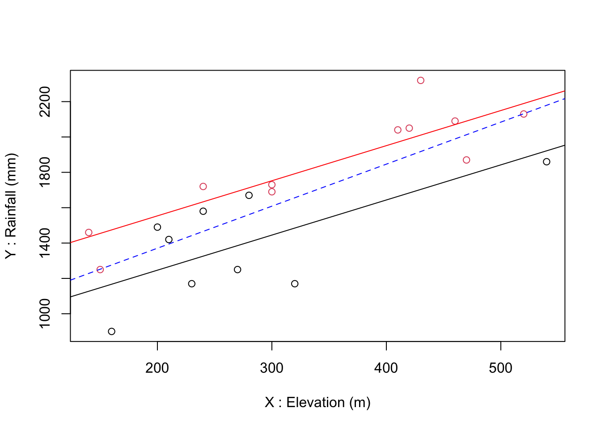

RainScotland<-read.csv("data/Ferguson/RainScotland.csv")
OLS1<-lm(Rainfall~Elevation,data=RainScotland)
summary(OLS1)
#>
#> Call:
#> lm(formula = Rainfall ~ Elevation, data = RainScotland)
#>
#> Residuals:
#> Min 1Q Median 3Q Max
#> -486.08 -175.04 91.28 130.15 402.42
#>
#> Coefficients:
#> Estimate Std. Error t value Pr(>|t|)
#> (Intercept) 895.3223 149.7609 5.978 1.18e-05 ***
#> Elevation 2.3774 0.4438 5.357 4.32e-05 ***
#> ---
#> Signif. codes: 0 '***' 0.001 '**' 0.01 '*' 0.05 '.' 0.1 ' ' 1
#>
#> Residual standard error: 242.8 on 18 degrees of freedom
#> Multiple R-squared: 0.6145, Adjusted R-squared: 0.5931
#> F-statistic: 28.7 on 1 and 18 DF, p-value: 4.317e-0529 Multiple Regression
Extension to use several independent variables (regressors)
\[Y = \alpha + \beta_1 X_1 + \beta_2 X_2 + \beta_3 X_3 ...\] ## Key points:
The model does not represent a straight line but a hyperplan.
The calculation of the quality of the fit (\(R^2\)) must be adjusted (particularly if lots of regressors and few observations)
The independent variables \(X_1,X_2, X_3,…\) should be independent from each other
The independent variables are not necessarily continuous ! See interpretation in case of factors
29.1 Example with two continuous regressors
Let’s remind our first model with a single independent variable:
We think that we can improve the model if we include the distance (eastward) from the Western coastline and augment our model:
OLS2<-lm(Rainfall~Elevation+DistanceE,data=RainScotland)
summary(OLS2)
#>
#> Call:
#> lm(formula = Rainfall ~ Elevation + DistanceE, data = RainScotland)
#>
#> Residuals:
#> Min 1Q Median 3Q Max
#> -268.04 -129.63 21.96 120.61 223.58
#>
#> Coefficients:
#> Estimate Std. Error t value Pr(>|t|)
#> (Intercept) 1536.6951 157.6228 9.749 2.24e-08 ***
#> Elevation 1.8238 0.3053 5.975 1.51e-05 ***
#> DistanceE -5.2209 1.0152 -5.143 8.14e-05 ***
#> ---
#> Signif. codes: 0 '***' 0.001 '**' 0.01 '*' 0.05 '.' 0.1 ' ' 1
#>
#> Residual standard error: 156.3 on 17 degrees of freedom
#> Multiple R-squared: 0.8492, Adjusted R-squared: 0.8314
#> F-statistic: 47.86 on 2 and 17 DF, p-value: 1.04e-07Compare the two models. What do you see?
First, the model is of higher quality and predictions will be better: - More of the total variance is explained: the R-squared increased from 0.61 to 0.83 (adjusted). - the residual standard error drops from 243 to 156 mm
Second, the distance to the coast is significant and negative. It is expressed in km, hence we interpret it as: “when you get farther from the Western coast, every km inland will reduce rainfall by 5.22 mm”.
Third, we could expect an interaction between elevation and distance from the sea. We observe that introducing the distance indeed changes our estimate of the elevation effect: from 2.38 mm of water for every m higher, we now estimate the effect of elevation to be a 1.82 mm per m. The effect remain well significant although it is reduced. We usually say that this new estimate is “cleared from the effect of distance” or “this is the effect of elevation after controlling for the effect of distance from the sea”.
DANGER ZONE - DON’T COMPARE COEFFICIENTS DIRECTLY. You cannot say that the effect of distance is 4 times larger than the effect of elevation! - BEAR THE UNITS IN MIND! \(\beta\) coefficients have units. For example, the coefficient associated to distance is mm/km in this case. If you had measured distance in m, the coefficient would be -0.00522, which looks lower than the effect of elevation and much closer to zero, but it is not!
29.2 Example with one continuous and one categorical regressor
Suppose you were not able to measure the distance between the meteorological station and the sea, but you had a variable indicating the station is in the Western part or the Eastern part of the country
Say the West variable is 1 when the collection site is on the Western side of Scotland and 0 on the Eastern side. It is important to represent those categorical variables as factors so their coding and effect are not seen as a continuous one. You can also use your prefereed reference category (here East then)
RainScotland$West<-as.factor(as.numeric(RainScotland$DistanceE<90))And we estimate a new model:
OLS3<-lm(Rainfall~Elevation+West,data=RainScotland)
summary(OLS3)
#>
#> Call:
#> lm(formula = Rainfall ~ Elevation + West, data = RainScotland)
#>
#> Residuals:
#> Min 1Q Median 3Q Max
#> -314.920 -135.718 -1.407 103.452 309.258
#>
#> Coefficients:
#> Estimate Std. Error t value Pr(>|t|)
#> (Intercept) 849.1774 120.4115 7.052 1.94e-06 ***
#> Elevation 1.9867 0.3732 5.324 5.60e-05 ***
#> West1 307.2854 91.7632 3.349 0.00381 **
#> ---
#> Signif. codes: 0 '***' 0.001 '**' 0.01 '*' 0.05 '.' 0.1 ' ' 1
#>
#> Residual standard error: 193.9 on 17 degrees of freedom
#> Multiple R-squared: 0.7677, Adjusted R-squared: 0.7404
#> F-statistic: 28.1 on 2 and 17 DF, p-value: 4.082e-06This model 3 is less effective than model 2 in general (R-squared is lower) but better than model 1. Also with this “specification”, the elevation effect is now around 2mm.
How do you interpret the West variable coefficient? It is not continuous so one can’t phrase it as “for every increase in…”, rather we will say that
“Being in the Western part of Scotland, one can expect to add 307mm of water relative to the level of rain in the Eastern part”
Note that now the intercept (now 849mm) refers to the level in the Eastern part. If there were several categorical variables, it would relate to the combined references across all variables.
Graphically you also see that introducing a categorical variable this way leads to a fixed amount of water (307mm) to be added everywhere to the relationship between elevation and rainfall (In some fields this is actually called a “fixed effect” model):
See in red the Western point and the corresponding fit, parallel to the corresponding fit for the Eastern stations in black.
The dashed blue line is the estimation from our first model (OLS1) for comparison.
plot(x=RainScotland$Elevation, y=RainScotland$Rainfall,
col=RainScotland$West,
xlab="X : Elevation (m)", ylab="Y : Rainfall (mm)")
abline(a=OLS3$coefficients[1],b=OLS3$coefficients[2], col="black")
abline(a=OLS3$coefficients[1]+OLS3$coefficients[3],b=OLS3$coefficients[2], col="red")
abline(a=OLS1$coefficients[1],b=OLS1$coefficients[2], col="blue", lty=2)
29.3 Exercise
Using the dataset Lux116.csv within the data folder. - Test the hypothesis that employment per municipality is related to ‘urbanness’ (using density), distance the main jobs (using road distance) and percentage of foreigners. - Test whether there could be a specific effect (downward or upward) of any the 3 districts?